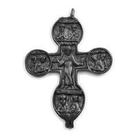
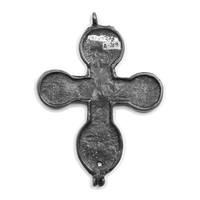

Catalog › CE-0603 · WEB2026-11
Valvă inferioară de encolpion, Muzeul „Kulikovo Pole”
sec. XIV–XV (1301–1500) · loc necunoscut · Muzeul-rezervație de stat „Kulikovo Pole”
single valve of a reliquary cross, altul; c. XIV–XV (1301–1500); find spot unknown; kept at Muzeul-rezervație de stat „Kulikovo Pole”.




Identificare
- Categorie
- Valvă izolată
- Material
- Altul
- Tehnică
- Turnare în relief
- Dimensiuni
- Î 90 × L 67 × Gr 3 mm
Iconografie
- Descriere avers
- Valvă inferioară cu patru brațe, cu unghiuri drepte la mijlocul crucii și capete rotunjite; în centru Proorocul Ilie cu un sul în mâna stângă; în medalioane rotunde de pe brațele laterale, precum și pe brațul de sus și cel de jos, perechi de busturi de sfinți; sus și jos prinderi cu urechi duble.
Datare și atribuire
- Datare
- sec. XIV–XV (1301–1500)
Descoperire
- Context
- Colecție (fără context)
- Coordonate
- 54.1931° N, 37.6177° E
- Precizia locului
- Loc de păstrare (loc de descoperire incert)
Păstrare și referințe
- Colecție
- Muzeul-rezervație de stat „Kulikovo Pole”
- Bibliografie
- Крест-энколпион (fișă de exponat, expoziția „Реликвии Куликовской битвы”), platforma ARTEFACT, ar.culture.ru (Ministerul Culturii al Federației Ruse), fără dată de publicare. https://ar.culture.ru/ru/subject/krest-enkolpion-4 [accesat 17.10.2026]
- Observații
- Metal neferos, turnat (sursa: „металл цветной, литье”). Dimensiuni 9 × 6,7 × 0,3 cm. A intrat în colecția muzeului din colecția conților Olsufiev; descoperire din anii 1880 (locul nu e dat). Imaginile din fișă: fața cu imagini (_av) și fața interioară (_rv). Locul descoperirii nu e cunoscut cu precizie; punctul de pe hartă marchează locul de păstrare (Muzeul-rezervație de stat „Kulikovo Pole”), nu locul descoperirii. Coordonate: nu sunt date în sursă.
Citare: Corpus Encolpiorum, CE-0603, Valvă inferioară de encolpion, Muzeul „Kulikovo Pole”, https://vitaliejosanu1979-ux.github.io/primul-meu-proiect/piese/WEB2026-11/ (accesat 2026-10-17).